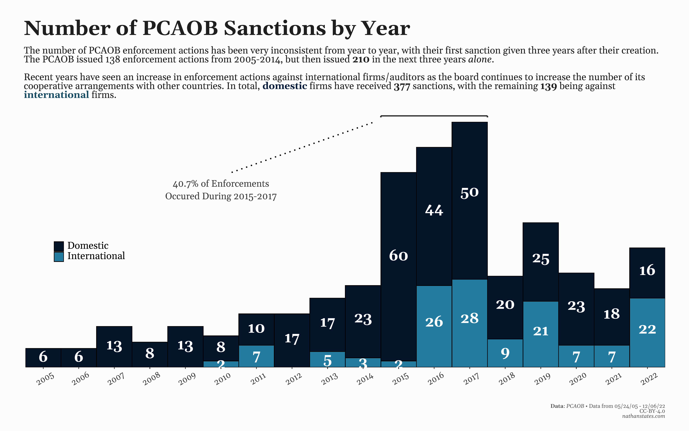

PCAOB Series
::: lead
This is a collection of all posts and data visualizations I’ve made on the PCAOB, including information on inspection reports, enforcement actions, and the board’s overall history. You can view those posts from the links below. :::
PCAOB Inspections (Part 1)
PCAOB Enforcement Actions (Part 2)
PCAOB Enforcement Actions (Part 2)
Other links on this page.
Data Visualizations #
Inspections #
::: {.box-width} :::

Enforcement Actions #
:::{.most-width}  :::
:::{.most-width} :::
Data Gathering #
If you go to pcaobus.org, you’ll find two separate databases: inspections and enforcement actions. Both databases provide reports in PDF format, so I manually gathered the relevant details from each file and stored them in two separate spreadsheets.
Inspections #
The PCAOB has performed over 3,500 inspection reports since its creation in 2002, with about 2,800 being on domestic firms. The relevant data of firm, year, number of audits inspected, and number of audits deficient has been collected from each report. Due to time constraints, only inspection data from the largest domestic firms are present in the dataset. However, all data from international affiliates among the four largest firms has been collected.
Additional data regarding industry and revenue range has been collected from the four largest firms.
Enforcement Actions #
According to the enforcement database, the PCAOB has given out a total of 351 enforcement actions as of November 22, 2022, all of which are included in the dataset. It should be noted that the way sanctions have been given has changed over time. Generally, each sanction is provided with its own individual report, but other times, one report will contain multiple sanctions (an example can be found here). This means that the number of PCAOB enforcement actions listed on their site doesn’t correspond with the total number of sanctions they’ve given, which is why this spreadsheet contains 512 rows instead of 351.
What is the PCAOB? #
At the end of 2000, the energy corporation Enron would finish the year as the seventh largest company in the United States. Less than a year later, though, the company would file for bankruptcy, causing tens of thousands to lose employment, and wiping out over $2.1 billion in 401(k) contributions. A later investigation by the Department of Justice (DOJ) found that Enron had been engaged in massive accounting fraud and were consistently lying about how profitable the company was. Then CEO Jeffrey Skilling would earn a 24 year prison sentence for his role in the scandal.
Auditors, in simple terms, are supposed to stop such things from happening. After the Great Depression, when it was discovered numerous companies had fraudulently over-inflated their profit margins, exacerbating the effects of the economic depression, all publicly traded companies were required to audit themselves upon the creation of the SEC in 1934. Auditors are expected to act impartially, ensure the revenue corporations report to investors is accurate, and to notify the appropriate authorities when fraud is detected. However, the audit industry remained self-regulated, and misconduct was rarely, if ever disciplined.
The auditors who worked at Enron were Arthur Andersen, then the fifth largest audit firm in the United States. In 2002, they were indicted by the DOJ for shredding documents related to Enron, though they were ultimately never charged due to a technicality regarding jury instructions. One might wonder what would compel Andersen to (allegedly) commit a serious felony by destroying potential evidence for one of its clients.
Not only was Andersen being paid $25 million by Enron to essentially not do their jobs, but they were also receiving $27 million in non-auditing fees, which almost entirely consisted of consulting services. It should be noted that auditors doubling as consultants is a somewhat recent phenomenon. During the late 1990s and early 2000s, the Big Four audit firms (those being Deloitte, PricewaterhouseCoopers, KPMG, and Ernst & Young) began expanding their consulting services substantially, which turned out to be much more profitable than only auditing. This transition saw a noticeable drop in overall audit quality, however. Data from the Government Accountability Office gathered from a Cornell Law study found that the total number of financial restatements, or instances in which a company had to readjust their financial reports, increased from 0.5% in 1997 to 3.9% in 2001 among the then Big Five.
To put this in perspective, among the five largest audit firms, the number of financial restatements increased from just 5 companies in 1997 to 40 in 2001. Another study by the University of Michigan Business Board found that on average, the share price of a stock fell 25% following the announcement of a financial restatement from 1997 - 2001, meaning that (unsurprisingly) nearly all financial restatements were the results of corporations exaggerating their revenue.
While Enron was the catalyst that showed self-regulation was problematic, the overall wave of accounting scandals (namely led by Worldcom, Waste Management, and Tyco) would destroy investor confidence in the market, providing motivation for the government to act. In 2002, Congress would pass the Sarbanes-Oxley Act, which received unanimous approval in the Senate, and set stricter guidelines and provisions for the audit industry.
This Act also created the Public Company Accounting Oversight Board (PCAOB), which every audit firm is required to register with. The PCAOB is responsible for monitoring audit firms, conducting investigations, and disciplining misconduct when it occurs. Essentially, their job is to ensure that auditors are doing their jobs properly, and to make sure nothing like Enron happens again.
However, if the audit industry could be undermined, could the PCAOB as well? Many government agencies - most recently the EPA - have been thoroughly weakened to serve certain interests. Is the PCAOB protecting ordinary investors, or are they serving special interests? This series attempts to answer these question by looking at PCAOB inspection reports and enforcement actions over the last twenty years.